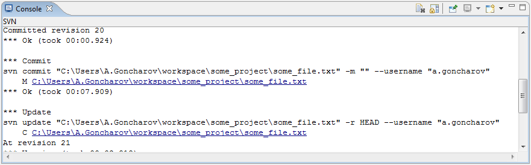

|
|
|
The 'SVN Console' is shown in the Workbench Console view. 'SVN Console' contains output form SVN command line. It's similar to SVN command line client output. All SVN errors and warnings are also posted here.
This is how 'SVN Console' looks like:
